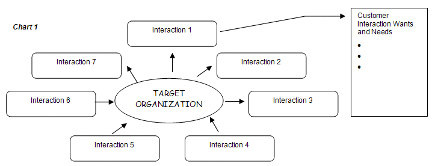

| Artifact: Customer Wants and Needs (BUS 320) |
 |
|
The primary purpose of defining Customer Wants and Needs is to provide clarity, from the outside-in view, around what customers desire from outcomes with business products or services and the processes that will impact their buying behavior and their loyalty to the product/service. This type of exercise may be part of a customer segmentation project, a precedent to Customer Relationship Management (CRM) or as part of a review of an organization's go-to-market strategy and evaluation of its value propositions. An added benefit of using this work product is that it can help identify gaps, weaknesses or misconceptions by the business regarding customer requirements. These should be investigated further through focus groups, surveys and other forms of primary customer research. Customer and audience wants and needs subsequently become design points for value propositions, as well as capabilities and enablers (resources) needed to deliver/support the value propositions. Defining customers, capturing their "voices," and rating the importance of resulting requirements are vital processes. We can define customers by:
Customer Engagement:
|
| Main Description | There are three categories of value a company can deliver to its customers through its offerings: economic value, psychological value, and functional value. Together, these three categories of value form the value proposition of a business to a customer-the overall benefits that the offering provides to the customer. The customer value proposition is the customer’s end of the value exchange, the transfer of value between the business and the customer as part of their value net relationship. In the Customer Value Management (CVM) methodology, wants and needs requirements are initially stated from the business perspective (based upon their knowledge or experience of interactions), and then confirmed by customers and/or other key audiences (suppliers, complementors, external influencers, etc.). The hypothesized wants and needs articulated by the business are referred to in the methodology as Audience Wants and Needs to differentiate them from the wants and needs articulated by the customer. The primary benefit of identifying the Audience Wants and Needs as part of the process is to understand any other key audiences’ values that might impact business products, services and/or processes and/or performance (e.g., employees, suppliers, complementors, etc.). Having articulated and defined customer wants and needs, it is valuable to stratify these wants and needs into a hierarchy of behavior drivers to understand their importance to, and impact on, customers. The hierarchy is broken into three levels:
The stratification process can be conducted qualitatively through focus groups, interviews and using industry experts. It also can be quantified through statistical testing to derive the importance of each want and need and know to which level - Basic, Satisfier, or Attractor - it belongs. Having an understanding of which elements of the product/service or delivery process are most important to customers will help the client selectively invest to get the most leverage in the marketplace from the investment. Customer Value Management methods, e-business Strategy and Planning Engagement Model methods and/or IT Strategy methods can all be used to identify the value propositions, capabilities and enabling infrastructure or resources necessary to deliver the articulated wants and needs. |
|---|---|
| Notation | Customer Interaction Map - The following graphic displays the various customer interactions around the business. This is one method to show customer touch points and any corresponding needs. The arrows show from which party the interaction is initiated. At each key interaction point and/or service encounter area, an expectation, experience attitude, state of mind and performance perception is shaped and reshaped.  Customer Satisfaction Model - Shown below is one example of a framework which can be used to display wants and needs after they have been stratified into Basics, Satisfiers and Attractors. The Customer Satisfaction Model is charted with customer loyalty on the y-axis and customer satisfaction on the x-axis. The Customer Loyalty Curve shows how loyalty increases, though not in a linear way, as satisfaction improves. As customer satisfaction increases in the “Basics” area, the loyalty increases rapidly but levels off as it reaches the middle “Satisfiers” area. As the customer satisfaction increases in the third or “Attractors” area the loyalty again begins to increase. Each want and need can be assigned to one of the three areas of the Customer Satisfaction model – Basics on the left, Satisfiers in the middle and Attractors on the right. In the example below, the Basics” include investments that bring customer satisfaction to a minimum level. The goal is to avoid incremental investments that yield no benefits in the “Satisfiers” area, but selectively invest in product/services elements that enhance loyalty in the third “Attractors” area. The examples below show that, in general, as satisfaction increases, so does loyalty.
In many cases, Attractors can include elements that customers do not even articulate as wants or needs. This is referred to as a “moment of value” because it creates incremental value for the customer (and generally for the client, as well). It is an opportunity for the client to offer something that exceeds customer expectations to the point where the customer would not even think to ask for it. These can be the points that truly differentiate the client from the competition. Business “value” means different things to different customers. The following list describes customer expectations for outsourcing service business value:
Business Drivers to Customer Wants and Needs Matrix - The table below is one method to compare how well customer wants and needs match with the key factors of the organization's business. Examples include increased operational efficiency, continuous development of human resource talent, maintaining world class levels of customer service, etc.
|

| Templates | |
|---|---|
| Examples |
When defining customer wants and needs, you cannot underestimate the value of obtaining direct customer feedback, recognizing the importance of rating customer requirements, identifying the steps to use to create an affinity diagram, sequencing the steps of creating a tree diagram, and identifying the most effective techniques to use when ranking customer input. The number one pitfall to avoid is the client insistence that "we know what our customers want and need" in those cases in which they lack an effective process to gather and analyze relative data. In today’s environment of rapidly changing customer needs, virtually no one has a means for monitoring and aligning their critical interactions with critical customer needs perceptions. When considering the customer base, do not forget about potential customers. There may be reasons why groups who are not currently customers might be attractive. It is hard to determine attractiveness if the group is excluded from the research. It is important to structure the research to identify distinct and unique needs-based segments. Segments that cannot be identified are not useful to the client. Qualitative research methods (interviews and focus groups) are a good way to uncover some of the key customer wants and needs. However, do not mistake the fact that information gathered from several interviews or ‘expert’ focus groups does not have analytic rigor and cannot necessarily be projected to the population from whom the experts were drawn. The IBM Customer Strategy Practice has a rigorous quantitative analytic methodology to derive the customer wants and needs when the CVM methodology may not be appropriate (such as with consumer products). A methodology using statistical analyses exists which can identify the wants and needs and quantify their relationship to customer satisfaction. It is strongly recommended to get an SME (on customer wants and needs from the Customer Strategy Practice or on CVM) on the project team to lead this work. The CVM class helps practitioners understand the correct approach to use, as well as how/when to engage a professional. Wants and needs gathered from focus groups are usually considered part of the qualitative data collection. In order to statistically test and validate focus group wants and needs, quantitative surveys need to be administered to a larger population. IBM Customer Strategy Practice within Business Consulting Services (BCS) Business and Customer Strategy practice has subject matter experts (SMEs) who are able to develop surveys and analyze survey results. Otherwise, a third party market research firm can be hired to administer a survey and analyze the survey results. When it is necessary to quantify customer wants and needs and determine their importance to satisfaction and loyalty, regression analyses are the preferred method. Both the gathering process (focus group interviews, surveys, etc.) and the resulting report need to consider the special needs (large print, sign language interpretation, etc.) of participants and readers who may have disabilities. It is also recommended to consult an Accessibility Business Specialist SME from the IBM Accessibility Center to understand the appropriate approach to use. |
| Impact of not having | This work product is critical to Customer Value Management (CVM), Customer Relationship Management (CRM), Supply Chain Management (SCM), e-business and other relationship-focused initiatives because it uses customer and/or other key audience wants and needs priorities as the design point for delivering new or improved value propositions, and designing business improvements via new or enhanced process capabilities and supporting infrastructure. Without a clear understanding of customer wants and needs, any relationship-focused initiatives may have less chance of success in the market. As well, without considering customer input, resources may be expended in a way that does not leverage the investment optimally. |
|---|---|
| Reasons for not needing | There are no reasons for not understanding the wants and needs of the client's customers when developing strategy. If the client has conducted primary research with their customers or portions of their customers, the urgency to conduct this work product may lessen. The ideal situation is to conduct a comprehensive quantitative study to understand customer wants and needs but that is not always possible. Practitioners should push clients to conduct the appropriate amount of research on customer wants and needs as fits with the overall engagement and objectives - even if it is a very qualitative examination. |
| Representation Options | There is no particular format for presenting Customer Wants and Needs. The consultant may devise graphic depictions that best relate to a particular touchpoint. Accessibility should be considered when determining the format (colors, text, etc.) to ensure the presentation will be received by all audiences. The following qualitative (non-statistically validated or prioritized) or quantified (statistically validated or prioritized) outputs can be produced to represent this artifact:
|
| Guidelines | |
|---|---|
| Supporting Materials | |
| Estimation Considerations |
| © Copyright IBM Corp. 1987, 2012 All Rights Reserved Property of IBM These materials are intended only for use as part of an IBM engagement |